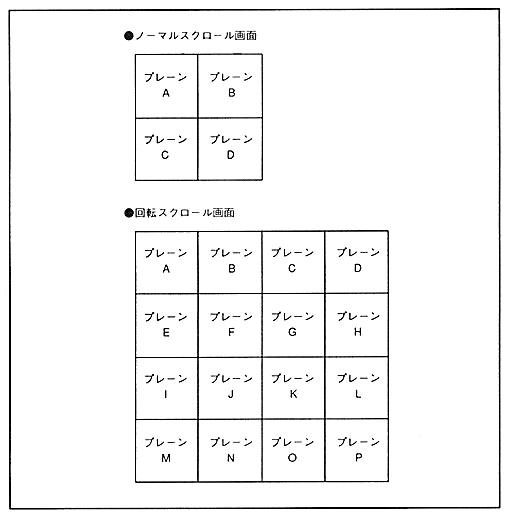

Return to previous page ｜ Return to menu ｜ Go to next page
-
■ Map size
- The map size (number of map planes) varies depending on whether the screen is a normal scroll screen or a rotary scroll screen. The normal scroll screen has a map of 2 horizontal planes x 2 vertical planes per screen. The rotation scroll screen has a map of 4 horizontal planes x 4 vertical planes for each of rotation parameter A and rotation parameter B. Figure 4.15 shows the layout of planes by map size.
Figure 4.15 Map size

Return to previous page ｜ Return to menu ｜ Go to next page